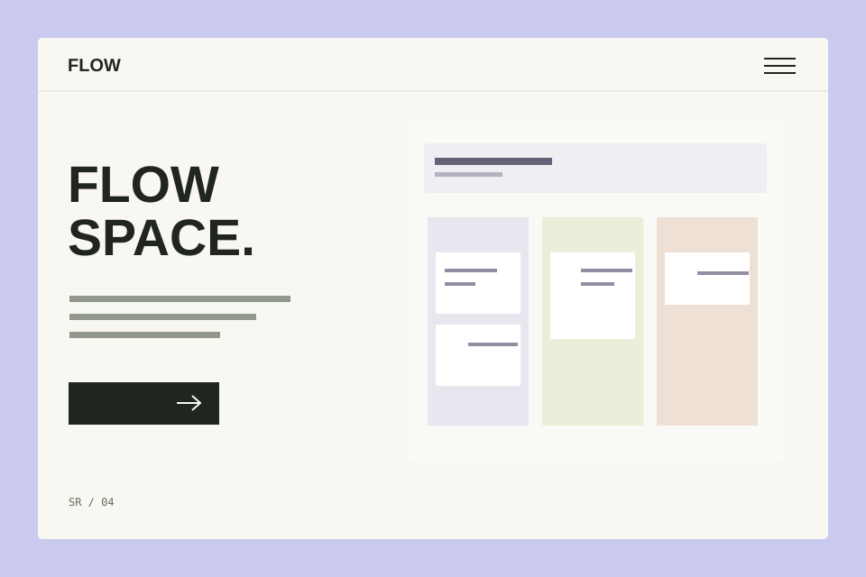

← Барлық жұмыс04 / 06
Дизайн тұжырымдамасы / 2026
FLOW
Жұмыс қосымшасы
Міндеттер мен шешімдердегі тәртіп.

Оқу дизайн тұжырымдамасы. Клиенттік іске қосу және коммерциялық көрсеткіштер мәлімделмейді.
01 / Міндет
Міндеттерді, мерзімдерді және жұмыс күйін бір кеңістікке жинау.
02 / Тәсіл және құрылым
Шолу → міндеттер → мәліметтер → келесі қадам. Ауысқанда контекст сақталады.
03 / Визуалды шешім
Ірі типография, нақты тор және ұстамды түстер. Міндеттер мен шешімдердегі тәртіп.
#cac9ee
#151515
#F5F4EF
04 / Шағын экранда
FLOW ≡
Міндеттер мен шешімдердегі тәртіп.
05 / Тұжырымдама нені көрсетеді
Композиция, мазмұн иерархиясы және интерфейстің бейімделуі әзірленді. Суреттер дайын клиенттік сервисті емес, дизайн бағытын көрсетеді.
Ұсынылатын іске асыру: HTML, CSS, JavaScript. Интеграциялар мен бизнес логикасы — бөлек кезең.